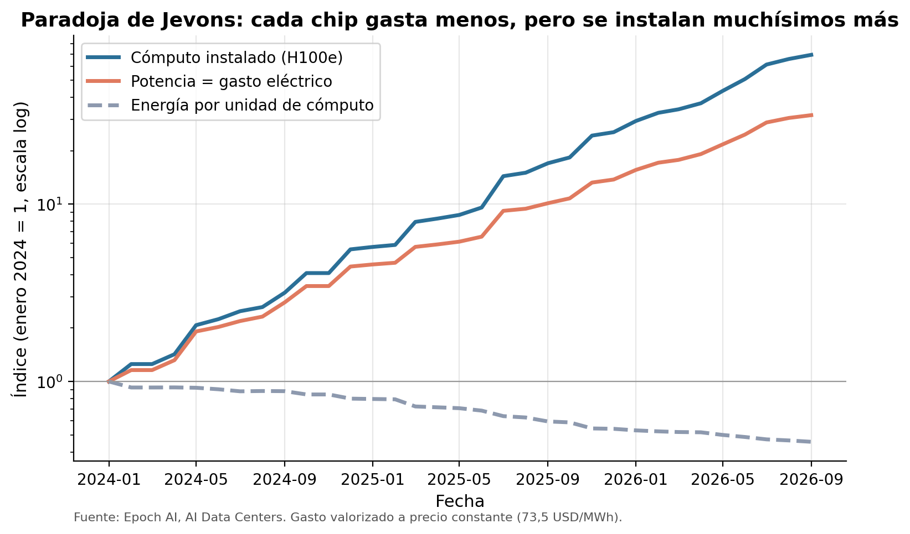

Trabajo práctico modelo · Laboratorio de Métodos Cuantitativos · FCE UBA
¿Cuánta electricidad se come la IA?
Data centers de inteligencia artificial: potencia, energía, dinero, poder de mercado y un escenario para Argentina.
0%de la demanda eléctrica argentina consumen hoy 69 data centers
0por año se pagan de electricidad
Para empezar · ¿qué es un data center?
Una fábrica que convierte electricidad en cálculos
Filas de servidoresMiles de computadoras apiladas en estanterías (racks), conectadas entre sí.Un rack de IANVIDIA GB200: 72 chips GPU en un armario de 2 metros, enfriado con líquido.El techo: refrigeraciónTodo ese calor hay que sacarlo. Por eso el techo está lleno de enfriadores.
Un modelo de lenguaje es una función con cientos de miles de millones de parámetros. Entrenarlo es encontrar los valores que mejor predicen la próxima palabra: como una regresión, pero gigante.
Cada chip hace multiplicaciones de matrices sin parar, y cada multiplicación consume energía y genera calor. Por cada 100 MW de chips hacen falta unos 30 MW más para enfriar.
El problema
La IA parece software. Su insumo crítico es la electricidad.
En octubre de 2025, OpenAI y Sur Energy firmaron una carta de intención por un data center de 500 MW en la Patagonia (Stargate Argentina), por USD 25.000 millones bajo el RIGI. Todavía no tiene sitio ni obra.
Pregunta: ¿cuánta electricidad demandan estos data centers, a qué ritmo crece, cuánto cuesta y qué implicaría uno de 500 MW en Argentina?
La cadena de valor · quién es quién
Cuatro eslabones, pocas empresas
1 · Chips
Diseñan los procesadores que hacen el cálculo.
NVIDIAAMDGoogle TPUAmazon TrainiumHuawei
2 · Dueños de data centers
Construyen y operan las instalaciones.
Google 3,3 GWMeta 2,4Amazon 1,7Microsoft 1,5SpaceXAI 1,3CoreWeaveOracle
Eléctricas locales ej. Georgia PowerOperadores de redEn Argentina: CAMMESA
Fuente: Epoch AI (dueños, usuarios y diseñadores de chips que figuran en la base). GW = potencia operativa.
Los datos · cómo se cruzaron
Cuatro fuentes, tres claves
data centersEpoch AI · 86
nombre
línea de tiempo499 hitos · 100%
data centers EE.UU.estado sacado de la dirección
estado
precio y mix eléctricoEIA · 29/29 estados
clusters de GPUEpoch AI · 482
pais
CO₂/kWh y demandaOur World in Data
SELECT d.estado, SUM(d.mw_it),
p.precio_industrial, m.pct_fosil
FROM data_centers d
LEFT JOIN precios_2024 p ON d.estado = p.estado
LEFT JOIN mix_2024 m ON d.estado = m.estado
GROUP BY d.estado
Sin normalizar los nombres, EE.UU. quedaba fuera del cruce ("United States of America" ≠ "United States"): coincidían 34 de 36 países.
✓ El JOIN de SQL da lo mismo que el merge de pandas
Resultado 1 · crecimiento
Una curva explosiva
0,4 GWenero 2024📱 cargar 20 millones de celulares por hora ❄️ 360.000 aires prendidos
12,9 GWhoy · septiembre 2026📱 el celular de todos los argentinos, 14 veces por hora ❄️ 11,7 millones de aires
35,5 GW2029, si terminan las obras📱 el celular de todos los argentinos, 39 veces por hora ❄️ 32 millones de aires
Supuestos: una carga completa de celular ≈ 20 Wh (batería de ~15 Wh más pérdidas del cargador); un aire split de 3.000 frigorías ≈ 1,1 kW; Argentina ≈ 46 millones de habitantes (Censo 2022).
Concepto de la materia · derivadas e integrales
La derivada dice qué tan rápido; la integral, cuánta energía
La instalación se acelera: de 3 GW/año en 2025 a casi 10 GW/año en 2027-28. Solo entre enero y septiembre de 2026 consumieron ~57 TWh, casi 4 veces lo que usa Uruguay en un año.
En dólares · ¿cuánto se paga de luz?
La factura de luz más cara del mundo
0por año hoy: 118 TWh × 73,5 USD/MWh (precio industrial de los estados donde están)
0por año con la potencia proyectada (325 TWh)
0por año pagaría Stargate Argentina: 4,55 TWh × 67 USD/MWh (costo monómico de grandes usuarios, 2026)
0%de su costo operativo anual sería electricidad
Energía = potencia × PUE 1,3 × uso 0,8 × 8.760 horas. Gasto = energía × precio. Precio argentino: proyección de CAMMESA citada por Aleph Energy (enero 2026).
Resultado 2 · concentración y localización
Pocas empresas, electricidad barata… y fósil
0%de la potencia en 5 empresas
7,35 vs 8,13¢/kWh industrial: estados con data centers vs promedio EE.UU.
0%de esa electricidad es fósil
Estructura de mercado · ¿oligopolio?
Pocos jugadores controlan las máquinas
26,9%
19,4%
14,2%
12,4%
10,6%
Otras 10
16,5%
0%de la potencia en 5 empresas
0índice HHI · lo explicamos en la próxima
¿Skynet?En Terminator (1984) una sola IA controla las máquinas. En la vida real no hace falta una: alcanzan cinco empresas.
Participación sobre la potencia operativa con dueño identificado (Epoch AI, 15 empresas). Logos: Wikimedia Commons, marcas de sus respectivos dueños. Póster de The Terminator (1984), derechos de sus titulares, citado con fines educativos.
Cómo se mide la concentración · índice de Herfindahl-Hirschman
HHI: sumar las participaciones al cuadrado
HHI = s1² + s2² + … + sn²
Cada s es la participación de una empresa en %. Elevar al cuadrado pesa más a las grandes: una empresa con 50% suma 2.500; diez empresas con 5% cada una suman apenas 250.
Empresa
Participación (s)
s²
Google
26,9%
722
Meta
19,4%
377
Amazon
14,2%
202
Microsoft
12,4%
153
SpaceXAI
10,6%
113
CoreWeave
5,5%
31
Oracle
4,0%
16
Otras 8 empresas
7,0%
10
HHI
100%
1.623
La columna s² suma 1.624 por redondeo; el cálculo exacto da 1.623.
¿Es mucho o poco?
No concentrado < 1.000
Moderado 1.000 – 1.800
Alto > 1.800
▲ IA: 1.623
10.000monopolio: 1 empresa con 100% → 100²
2.5004 empresas iguales: 4 × 25²
1.00010 empresas iguales: 10 × 10²
100100 empresas iguales: 100 × 1²
HHI = 10.000 / n = 1.667 → moderadamente concentrado
El mercado de la IA equivale a tener ~6 empresas iguales (10.000 / 1.623 ≈ 6,2). Escala no proporcional. Umbrales: guías de fusiones del Departamento de Justicia y la FTC de EE.UU. (2023).
Modelos · regresión y machine learning
Explicar vs. predecir
0Regresión: energía por unidad de cómputo. Más eficiencia… y aun así más consumo (paradoja de Jevons)
0ML: lo que aprende el modelo. 500 MW → ~487.000 chips
0,20 → 0,95R² según el sorteo train/test. Validación cruzada: 0,75. Con pocos datos, un solo sorteo engaña
Conducta · la paradoja de Jevons
Cada chip gasta menos… pero se instalan muchísimos más

0energía por unidad de cómputo en el último año (sep-2025 → sep-2026)
0se multiplicó el cómputo instalado
0se multiplicó el gasto eléctrico: de USD 2.760 M a 8.660 M por año
El ritmo de querer más IA le gana a la eficiencia. Jevons lo vio en 1865 con el carbón: las máquinas de vapor más eficientes no bajaron el consumo, lo multiplicaron.
Conducta · ¿por qué salir a bolsa?
OpenAI y Anthropic: prometer crecimiento cuesta electricidad
Valuaciones récordAnthropic USD 965.000 M · OpenAI USD 852.000 M. Ambas pidieron salir a bolsa en junio de 2026.
Hay que justificarlas con crecimientoMás usuarios, más modelos, más grandes.
Crecer = más cómputo×4,1 en el último año en los data centers de la base.
Más cómputo = más luz y más inversiónGasto eléctrico ×3,1; ~USD 38.000 M por cada GW nuevo. Se paga antes de cobrar.
¿Y si los ingresos no llegan?Bain: la industria necesita USD 2 billones de ingresos por año para recuperar lo invertido. Si no, burbuja.
Pierden plataOpenAI, Anthropic y SpaceX/xAI “pierden más dinero del que ganan” (Fortune/AP)
0%margen bruto de NVIDIA, que vendió USD 89.000 M en data centers en un trimestre
“Dado todo lo que está sucediendo con la seguridad, este sería un momento poco aconsejable para salir al mercado bursátil.”— Sam Altman, 12 de septiembre de 2026
🧠 En la fiebre del oro, ¿quién gana seguro: el que busca oro o el que vende las palas?
Fuentes: Fortune/AP (2-jun-2026), Washington Monthly (may-2026, estimación de Bain & Company), NVIDIA (resultados del 2.º trimestre fiscal 2027, 26-ago-2026), Infobae (12-sep-2026). Cómputo y gasto: Epoch AI, cálculo propio.
Organización industrial · estructura → conducta → desempeño
HHI 1.623Google 26,9% · Meta 19,4% ≈ 6 empresas iguales
HHI ≈ 1.900*OpenAI, Meta, Google DeepMind y Anthropic: 81%
Barreras de entrada
Diseño y fabricación de chips de punta
~USD 38.000 M por GW de capacidad
Cómputo, datos y talento
Integración vertical
Google (100% chips propios) y Amazon (91% propios) hacen chip + data center + laboratorio. Meta, Microsoft, SpaceXAI, CoreWeave y Oracle dependen 100% de NVIDIA.
Conducta
Márgenes récord
Carrera de capacidad (Jevons)
IPO para financiar el crecimiento
Desempeño (Lerner)
≈ 0,75margen bruto de NVIDIA
0,21 – 0,83alquiler de GPU, largo plazo
Pierden platacon valuaciones récord
Chips: cómputo instalado por diseñador en los data centers de Epoch AI. Data centers: MW operativos por dueño. *Laboratorios: medida aproximada (data centers donde aparecen como usuarios).
Desempeño · poder de mercado
Índice de Lerner: ¿cuánto del precio es margen?
L = (P − CMg) / P
0 = competencia perfecta (precio = costo marginal). Cerca de 1 = mucho poder de mercado.
Costo de una hora de una H100 (datos propios)
Electricidad
USD 0,09
Operación (incluye luz)
USD 0,13
+ Capital amortizado
USD 1,17
Inversión amortizada en 5 años con 80% de uso; electricidad a 73,5 USD/MWh.
Proveedor
Precio USD/hora
L corto plazo
L largo plazo
Vast.ai (más barato)
1,49
0,92
0,21
Lambda
2,99
0,96
0,61
AWS
3,90
0,97
0,70
Azure
6,98
0,98
0,83
Trampa del corto plazo: con costos fijos gigantes, L ≈ 1 no prueba monopolio. El precio tiene que cubrir la inversión.
Largo plazo: márgenes altos en los hyperscalers, competencia de neoclouds baratos.
Chips: NVIDIA, con 75% de margen bruto y 66% del mercado, es donde el poder de mercado es claro.
Precios: IntuitionLabs, comparación de alquiler de H100 (actualizada el 16-ago-2026). Costos: Epoch AI y EIA, cálculo propio. Si la vida útil fuera de 3 años, el L de largo plazo de Lambda bajaría a 0,37.
Resultado 3 · dimensión
Hoy, casi una Argentina. Mañana, dos.
118 TWh/año con la potencia actual: el 73% de la demanda eléctrica argentina (161,7 TWh).
325 TWh/año con la proyectada: 2 veces Argentina.
Resiste el supuesto: con un uso del 60% sigue siendo más de la mitad de Argentina.
En Latinoamérica casi no hay cómputo de IA: los data centers usan el 0,12% de la electricidad regional, contra el 4,9% en EE.UU.
Escenario · Stargate Argentina (500 MW)
Absorbible en demanda. La clave es con qué energía.
0%de la demanda eléctrica del país (4,55 TWh/año)
0CO₂/año con la red promedio argentina
0con una red como la de Noruega
USD 19-25 mil Mcapex: coeficientes de Epoch vs anuncio
Mientras tanto, en las noticias
Salidas a bolsa récord… y advertencias de catástrofe
1 jun 2026 · Anthropic (Claude)
Presenta en forma confidencial su pedido de IPO
Valuada en USD 965.000 millones tras una ronda de USD 65.000 M. Según el Financial Times, apunta a salir a bolsa en octubre con ~USD 2 billones: sería la IPO más grande de la historia. No está confirmado.
Tras la renuncia del investigador Jacob Coxon, Evan Hubinger, responsable de seguridad en Anthropic, estimó más de 10% de probabilidad en la próxima década. La ONU habló de “riesgo existencial”. Otros advierten un riesgo más terrenal: que estalle la burbuja de inversión.
🧠 Para pensar con datos: ¿qué parte de cada titular se puede verificar? ¿A quién le conviene cada relato: el de la IA imparable, el del apocalipsis o el de la burbuja?
Conclusiones
Lo que aprendimos
El desafío es la velocidad: las redes tardan años en crecer; la demanda de la IA llega en meses.
Barato ≠ limpio: en EE.UU. se instalan donde la luz es barata y mayormente fósil.
Argentina: 500 MW son el 2,8% de la demanda y ~USD 305 M/año de luz; su huella depende de abastecerse con eólica.
Mercado: oligopolio moderado (HHI 1.623), con barreras de entrada enormes.
Método: el costo de Epoch era un coeficiente fijo. Antes de modelar, entendé cómo se construyó el dato.
Cruces: un merge no avisa cuando pierde claves. Diagnosticá antes de unir.
Machine learning: con pocos datos, validá con varios sorteos antes de celebrar un R².
Limitaciones: estimaciones (±1,4×), factor de uso supuesto, intensidad promedio de red.
Gracias
¿Preguntas?
Código, datos, notebook e informe: github.com/Datso653/datacenters-ia
Datos: Epoch AI (AI Data Centers, GPU Clusters, CC-BY) · U.S. Energy Information Administration · Our World in Data (Ember, IEA) · CAMMESA vía Aleph Energy. Noticias: CNBC, TechCrunch, Fortune, Infobae, La Nación, Washington Monthly, DatacenterDynamics. Fotos: Wikimedia Commons (ver img/CREDITOS.md). Análisis en Python con asistencia de IA, verificado contra los datos.